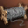

Recipes
Recipes de Materiales
Esta es una recopilación de recipes de materiales, sacada de una guía de PMfun, si conocés un mejor drop para uno de los récipes, avisar y lo cambio.
La localización de los mobs se muestra colocando el mouse arriba de la zona y nombre del mob.
*Las chances de spoil/drop dependen de los rates del server.
lvl 1 recipes (Dwarf Fighter lvl 1):
 Braided Hemp - spoil 1/27 Goblin Scout lvl 8 (Talking Island)
Braided Hemp - spoil 1/27 Goblin Scout lvl 8 (Talking Island)
 Coarse Bone Powder - spoil 1/28 Utuku Orc Archer lvl 8 (north of Dwarven Village)
Coarse Bone Powder - spoil 1/28 Utuku Orc Archer lvl 8 (north of Dwarven Village) 
Steel - spoil 1/23 Garum Werewolf lvl 9 (north of Dwarven Village)
Leather - spoil 1/10 Rakeclaw Imp Chieftain lvl 10 (east of Orc Village)
Cokes - spoil 1/17 Kuruka Ratman  lvl 16 (Cave of Trials)
lvl 16 (Cave of Trials)
lvl 2 recipes (Artisan lvl 20)
 Compound Braid - spoil 1/22 Scarlet Salamander
Compound Braid - spoil 1/22 Scarlet Salamander lvl 17 (Cave of Trials)
lvl 17 (Cave of Trials)
 Synthetic Cokes - spoil 1/21 Moonstone Beast
Synthetic Cokes - spoil 1/21 Moonstone Beast lvl 17 (Neutral Zone)
lvl 17 (Neutral Zone)
 High Grade Suede - spoil 1/18 Lycanthrope
High Grade Suede - spoil 1/18 Lycanthrope lvl 20 (Neutral Zone)
lvl 20 (Neutral Zone)
 Varnish of Purity - spoil 1/19 Lirein Elder
Varnish of Purity - spoil 1/19 Lirein Elder lvl 19 (northeast of Neutral Zone)
lvl 19 (northeast of Neutral Zone)
 Silver Mold - spoil 1/20 Scavenger Bat
Silver Mold - spoil 1/20 Scavenger Bat lvl 18 (Ruins of Despair)
lvl 18 (Ruins of Despair)
Cord - spoil 1/17 Arachnid Tracker lvl 19 (Windmill Hill)
lvl 19 (Windmill Hill)
 Steel Mold - spoil 1/16 Enku Orc Shaman
Steel Mold - spoil 1/16 Enku Orc Shaman lvl 20 (north of Dion)
lvl 20 (north of Dion)
lvl 4 recipes (Warsmith lvl 36)
 Blacksmith's Frame - spoil 1/27 Marsh Stakato Soldier
Blacksmith's Frame - spoil 1/27 Marsh Stakato Soldier lvl 33 (north part of Cruma Marshlands)
lvl 33 (north part of Cruma Marshlands)
 Metallic Fiber - spoil 1/11 Ant Warrior Captain
Metallic Fiber - spoil 1/11 Ant Warrior Captain lvl 36 (Ant Nest)
lvl 36 (Ant Nest) 
 Metallic Thread - drop 1/112 Noble Ant Leader
Metallic Thread - drop 1/112 Noble Ant Leader lvl 38 (Ant Nest)
lvl 38 (Ant Nest)
 Durable Metal Plate -(c4 o menos) drop 1/100 Lageos
Durable Metal Plate -(c4 o menos) drop 1/100 Lageos lvl 38 (south of the Field of Whispers)
lvl 38 (south of the Field of Whispers)
- drop 1/25 Giant Fungus lvl 40 (Sea of Spores)
lvl 40 (Sea of Spores)
Oriharukon - spoil 1/10 Fettered Soul  lvl 38 (north of Death Pass / Hardin's Private Academy)
lvl 38 (north of Death Pass / Hardin's Private Academy)
 Mithril Alloy - spoil 1/19 Windsus
Mithril Alloy - spoil 1/19 Windsus lvl 39 (north of Death Pass / Hardin's Private Academy)
lvl 39 (north of Death Pass / Hardin's Private Academy)
 Artisan's Frame - spoil 1/17 Grandis
Artisan's Frame - spoil 1/17 Grandis lvl 40 (north of Death Pass / Hardin's Private Academy)
lvl 40 (north of Death Pass / Hardin's Private Academy) 
 Crafted Leather - drop 1/242 Guardian Basilisk
Crafted Leather - drop 1/242 Guardian Basilisk lvl 36(Death Pass)
lvl 36(Death Pass)
- drop 1/101 Vagabond of the Ruins lvl 40 (c5+ Sky Wagon Relic)
lvl 40 (c5+ Sky Wagon Relic)
 Metal Hardener - spoil 1/18 Aligator
Metal Hardener - spoil 1/18 Aligator lvl 40 (Alligator Beach)
lvl 40 (Alligator Beach)
 Reorin's Mold - can be crafted at Blacksmith
Reorin's Mold - can be crafted at Blacksmith
lvl 6 recipes (Warsmith lvl 49)
 Maestro Anvil Lock - spoil 1/20 Hatar Hanishee
Maestro Anvil Lock - spoil 1/20 Hatar Hanishee lvl 49 (War Torn Plains)
lvl 49 (War Torn Plains)
 Maestro Mold - spoil 1/17 Tarlk Bugbear High Warrior
Maestro Mold - spoil 1/17 Tarlk Bugbear High Warrior lvl 49 (north of Ivory Tower)
lvl 49 (north of Ivory Tower)
 Maestro Holder - spoil 1/19 Tarlk Basilisk
Maestro Holder - spoil 1/19 Tarlk Basilisk lvl 50 (Outlaw Forest)
lvl 50 (Outlaw Forest) 
 Craftsman Mold - spoil 1/8 Doom Knight
Craftsman Mold - spoil 1/8 Doom Knight lvl 65 (Forbidden Gateway)
lvl 65 (Forbidden Gateway) 
 Warsmith's Holder - can be crafted at Blacksmith
Warsmith's Holder - can be crafted at Blacksmith
 Arcsmith's Anvil - can be crafted at Blacksmith
Arcsmith's Anvil - can be crafted at Blacksmith
 Warsmith's Mold - can be crafted at Blacksmith
Warsmith's Mold - can be crafted at Blacksmith